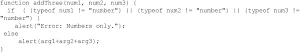
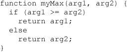
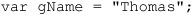

Functions can be used to create code fragments that can be used over and over again. When written properly, functions are abstract —they can be used in many situations and are ideally completely self-contained, with data passing in and out through well-defined interfaces. Like any modern programming language, JavaScript allows for the creation of reusable abstract functions. Surprising to some, JavaScript functions are actually first-class data types and support a variety of advanced ideas such as variable arguments, variable passing semantics based on type, local functions, closures, and recursive functions. In short, JavaScript supports plenty of features useful for writing modular code, though whether a coder uses such features or instead relies on global variables and side effects to accomplish their tasks tends to be related more to programmer experience than language features. This chapter presents the basics of functions and their syntax and tries to help infuse the attitude to use them well.
The most common way to define a function in JavaScript is by using the keyword function, followed by a unique function name, a list of parameters (that might be empty), and a statement block surrounded by curly braces. The basic syntax is shown here:
A simple function that takes no parameters called sayHello is defined here:
To invoke the function somewhere later in the script, you would use this statement:
NOTE Forward references to functions generally are not allowed; in other words, you should always define a function before calling it. However, within the same <script> tag, it is possible to reference a function before it is defined. This is a very poor practice and should be avoided.
Very often we will want to pass information to functions to be used in a calculation or to change the operation the function performs. Data passed to functions, whether in literals or variables, are termed parameters, or occasionally arguments. Consider the following modification of the sayHello() function to take a single parameter called someName:
In this case, the function receives a value that determines which output string to display. Calling the function with
results in this alert being displayed:
Calling the function either as
or simply without a parameter:
will result in the other dialog being displayed:
When you invoke a function that expects arguments, without them JavaScript fills in any arguments that have not been passed with undefined values. This behavior is both useful and extremely dangerous at the same time. While some people might like the ability to avoid typing in all parameters if they aren’t using them, the function itself might have to be written carefully to avoid doing something inappropriate with a nonexistent value. In short, it is always good programming practice to carefully check parameters passed in.
Functions do not have to receive only literal values; they can also be passed variables or any combination of variables and literals. Consider the function here named addThree(), which takes three values and displays their result in an alert dialog:
Be careful with parameter passing; because JavaScript is weakly typed, you might not get the results you expect. For example, consider what would happen if you called addThree() like so:
You would see that type conversion in combination with the overloaded + operator would result in a string being displayed:
Using the typeof statement, we might be able to improve the function to report errors:

We’ll see a number of other ways to make a more robust function later in the chapter; for now, let’s concentrate on returning data from a function.
We might want to extend our example function to save the result of the addition; this is easily performed using a return statement. The inclusion of a return statement indicates that a function should exit and potentially return a value as well. Here the function addThree() has been modified to return a value:
Functions also can include multiple return statements, as demonstrated by the example here:

Functions will always return some form of result, regardless of whether or not a return statement is included. By default, unless an explicit value is returned, a value of undefined will be returned. While the return statement should be the primary way that data is returned from a function, parameters can be used as well in some situations.
NOTE Sometimes these implicit return statements cause problems, particularly when associated with HTML event handlers such as onclick. Recall from Chapter 4 that the void operator can be used to avoid such problems, such as in this example: <a href=“http://www.pint.com “onclick=“return void x();”> Press the link</a>. Using void in this manner destroys the returned value, preventing the return value of x() from affecting the behavior of the link.
Primitive data types are passed by value in JavaScript. This means that a copy is effectively made of a variable when it is passed to a function, so any manipulation local to the function leaves the original variables untouched. This is best illustrated by an example:
The result of the example is shown here:
ONLINE http://javascriptref.com/3ed/ch5/passbyvalue.html
Notice that the function fiddle() does not modify the value of the variable str because, as a primitive type, it only receives a copy of str. In other words, primitive types are passed by value. However, if composite types such as arrays and objects are used, they are passed by reference rather than value. This means that the function they are passed to can modify the original data because it receives a reference to the data rather than a copy of the value. It should be clear now why we often dub such types “reference types.” Consider the following modification of the previous fiddle() function:
In this situation, the function fiddle() can change the values of the array passed in, as shown here:
ONLINE http://javascriptref.com/3ed/ch5/passbyreference.html
The reason for this, of course, is that composite types such as arrays and objects are passed by reference rather than value. In other words, a pointer to the object is passed to the function rather than a copy of it. Fortunately, unlike other languages such as C, JavaScript doesn’t force the user to worry about pointers or how to de-reference parameters.
Be careful, though; the references are weak in the sense that if you completely replace a parameter with another value it won’t affect the original item. Here, for example, because the parameter arg1 completely replaces with a new array literal, the original values are still intact after the call:
ONLINE http://javascriptref.com/3ed/ch5/weakreference.html
If you are concerned about flexibility and slight variations of passing semantics depending on modification, then just rely on return to pass a value(s) back from a function. If it is necessary to send multiple values back from the function, it is possible to do this by returning an array or object that contains multiple entries.
There are two basic scopes in JavaScript: global and local. A global variable is one that is known throughout a document, while a local variable is one that is limited to the particular function it is defined within. For example, in the script here, the variable x is defined globally and is available within the function myFunction(), which both prints and sets its value:
The output of this script is shown here:
Notice in this case that the variable x can be read and modified both inside and outside the function. This is because it is global. However, global variables aren’t always helpful because they don’t allow us to reuse functions easily.
Instead of using global variables, we should define local variables that are known only within the scope of the function in which they are defined. For example, in the following script the variable y is defined locally within the function myFunction() and set to a simple string:
However, outside the function, y is undefined, so the script will throw an error message:
To “fix” the execution of this script, we can replace the second output statement with a small if statement to determine if the variable y is defined within the current context, namely the current window:
Notice that, in this case, the script shows that indeed the variable y is undefined in the global space:
However, more likely, we purposefully want to create local variables that are not known in the global scope so that we can hide the implementation of the function from the code that uses it. This abstraction allows for the clean function reuse alluded to earlier, but be careful because sometimes the use of local and global variables can get confusing, particularly when there are similar names in use.
When employing variables in different scopes, we should be cautious. In this section, we briefly discuss how to name variables for readability. First up, the use of similar variable names for both local and global variables creates a potentially confusing situation, often termed a mask out. Notice in the example here how both local and global variables named x are used:
As shown in the output here, the value change made in the function is not preserved because the local variable does not affect the global one:
This is the appropriate action, but the readability of the code is somewhat reduced since there is no immediate difference on inspection between the global x and the local x. Given the often dangerous use of global variables, many JavaScript programmers will prefix them with a g so that they are easily seen. For example:

Alternatively, you may decide to prefix the local variable or make it a property of the function itself and reference it in that way so it is more obvious that the variable is local:
As we’ve mentioned many times in the book, we need to be somewhat cautious with JavaScript variable naming, particularly with global values, as they share the same name space with other scripts. The use of the object wrapper or prefixing techniques should be used to reduce the possibility of these problems.
It might also be useful, in addition to limiting a variable’s scope to a particular function, to create a function local to a function. This capability is not surprising if you consider that it is possible to create local objects and that functions themselves are objects (as we’ll see in the section “Functions as Objects,” later in this chapter).
To create a local function, just declare it within the statement block of the function to which it should be local. For example, the following script shows a function called testFunction() with two locally defined functions, inner1() and inner2():
From within the function, it is possible to call these functions as shown above, but attempting to call inner1() or inner2() from the global scope results in error messages, as demonstrated here:
Do not mistakenly assume that you would be able to invoke the inner functions with some path such as testFunction.inner2(), as that doesn’t work. Local functions are hidden within the containing object, and thus this construct provides us the ability to create stand-alone modules of code. Early on, such techniques were not widely used; but today with much more involved uses of JavaScript, they are more commonplace. However, the potentially confusing nature of variable scope and the lifetime of inner functions present an often confusing but quite useful idea called a closure, which we explore next.
A closure is an inner function in JavaScript that becomes available outside of the enclosing function and thus must retain a variable state to act in a meaningful way. For example, consider the following function:
When you run this code fragment, the function outer() is invoked and has a locally scoped function inner() that will print out the variable. This inner() function will be called in one second, but you will have left the outer() function by the time the inner() function is called, so what would the value of x be? Because of the way JavaScript binds the values of the needed variables to the function, it will actually have a value in x of 10 at the time the function inner() is invoked:
This gets quite interesting if you note when these bindings actually happen. Consider the following code, which resets the value of x:
It might be surprising to you, since the timeout and the reassignment happens after the function is defined, that the value of x is the string value “Late to the party!” as shown here. This shows that the inner function is not just copying the value of the variable x, but also holds a reference to that variable.
Do not assume that closures are related solely to timeouts and other asynchronous activity, such as the pattern of JavaScript called Ajax thrives on; they can be employed casually. The following little example shows that you could just as easily use them when doing higher-order JavaScript programming when you return functions as values for later use:
Beyond such a rudimentary example of closures, you will also encounter these constructs commonly in Ajax applications (see Chapter 15) because of the need to set up asynchronous communication and various event handlers to address user activity. We’ll see that sloppy use of closures, event handlers, and other JavaScript nuances can lead to memory leaks. We warn readers that excessively employing complex coding patterns heavy on closures may be done with good intention of elegance, but may too often result in frustrating debugging and refactoring efforts.
As we’ll see in the next chapter, in JavaScript just about everything is an object, and functions are no exception. Thus it is possible to define functions in a much different way than we have seen up until now by treating a function just like any plain object and instantiating it using the keyword new. For example, here we define a function and assign it to the variable sayHello :
Notice that Function is capitalized since it is a constructor and we are creating an instance of JavaScript’s built-in Function object. Later on, we can then use the assigned variable sayHello just like a regular function call:
Because functions are first-class data types, the function can even be assigned to another variable and used by that name instead:
To continue the example, we could define a function with a parameter to print out, as follows,
and call it:
The general syntax for the Function() constructor is
As we have already seen, functions can have zero arguments, so the actual number of parameters to the Function() constructor will vary. The only thing we have to do is pass, as the final argument, the set of statements that are to execute as the body of the function.
If you have coded JavaScript before, you may not have seen this style of function definition and might wonder what its value is. The main advantage of declaring a function using the new operator is that a script can create a function after a document loads.
As we have seen in the previous section, defining a function using a new operator doesn’t give the function a name. A similar way to define a function without a name and then assign it to something is by using a function literal. Function literals use the function keyword but without an explicit name. Our simple example from before would be written as a functional literal, like so:
Function literals are commonly employed when creating methods for user-defined objects. A simple example showing function literals used in this manner is presented here. We have defined a function Robot() that is used as an object constructor—a function that creates an object. Within the function, we have defined three methods that are assigned function literals:
It is now simple to create an object using the new operator in conjunction with our Robot constructor function, as shown here:
Invoking the various functions, or more correctly methods, is simply a matter of invoking their names, similar to plain function calls:
You might wonder why not just use the following new style syntax in the constructor function:
The reality is you could, and everything would still operate properly. The only downside to this approach is that it will use substantially more memory, as new function objects are created every time you create a new instance of the Robot object.
A function literal is a nameless function that doesn’t get assigned a name at any time. An anonymous function is one that cannot be further referenced after assignment. For example, we may want to sort arrays in a different manner than what the built-in sort() method provides (as we’ll see in Chapter 7); in such cases, we may pass an anonymous function:
The creation of an anonymous function is, in this case, carried out by using a function literal. While the function is accessible to sort() because it was passed a parameter, the function is never bound to a visible name, so it is considered anonymous.
As the previous example demonstrates, in JavaScript functions are first-class data types, so it is quite possible to use them pretty much wherever you might use a variable. Generally, these throw-away functions are directly invoked. Here a simple example shows this:
The general sense of wanting to use such a construct is to encapsulate some code you would like to use once and not pollute the runtime name space.
Probably the most common style of anonymous function application will be as simple event handlers, as illustrated with this example that binds a window load-handling function as well as a simple function for a button press:
While syntactically correct, this use of anonymous function event binding is inelegant and results in interaction problems when used with multiple scripts. A better approach to event management using DOM methods such as addEventListener() is presented in Chapter 11.
One interesting aspect of the nature of functions as objects is that you can create static variables that persist beyond function invocations by adding an instance property for the defined function. For example, consider the code here that defines a function doSum() that adds two numbers and keeps a running sum:
The result shown next demonstrates that, by using a static variable, we can save data between calls of a function:
ONLINE http://javascriptref.com/3ed/ch5/staticvariables.html
As objects, user-defined JavaScript functions have a variety of properties and methods associated with them. One particularly useful property is the read-only length property that indicates the number of parameters the function accepts. For example:
the script would show that myFunction() takes three parameters. This property shows the defined parameters for a function, so when a function is declared as taking no arguments, a value of 0 is returned for its length property.
NOTE Some browsers may also support an arity property that contains the same information as length. Because this is nonstandard, it should be avoided.
Of course, it is possible to vary the number of arguments actually given to a function at any time, and we can even accommodate this possibility by examining the arguments[] array associated with a particular function. This array is implicitly filled with the arguments to a function when it is invoked. The following example shows a function, myFunction(), that has no defined parameters but that is called with three arguments:
The result shown here indicates that JavaScript functions are perfectly happy to receive any number of parameters:
Of course, you may wonder how to put this to use. The following example shows a summation routine that adds any number of arguments passed to it:
Note that this isn’t a terribly robust function—if you pass it strings or other data types that shouldn’t be added, it will try to sum those as well. We briefly explore some techniques to make functions a bit more robust when variable parameters are employed.
It is also worth noting that, in the past, arguments was a property on a function instance rather than a variable within its invocation. Both syntaxes still work, but the Function.arguments property has been deprecated.
As we have just seen, JavaScript doesn’t carefully check the number or type of variables passed to a function. When properly employed, it is possible to use functions that accept a variable number of arguments to write very elegant JavaScript code. However, it is equally possible that doing so will cause a problem. For example, consider this simple function that does no checking:
While it doesn’t throw any particular errors with an undefined value as a second value, we can’t always hope that weak typing saves us. We first might want to ensure that the number of parameters passed to a function is correct. Here we check for the correct number of arguments passed:
Of course, this wouldn’t correct a function call such as
which would produce a value of 6, since true would be converted to the integer 1. However, if we invoked the function with
we get an incorrect value of 55. Maybe this is the correct functionality, but we certainly could add type checking for the passed parameters, like so:
As we can see, to create truly reusable functions that will withstand anything thrown at them, we will have to put in some more effort.
ECMAScript 5 strict mode can be invoked on a function-limited basis. For example, if we were worried about tightening up our previous addTwo() function, we might start it with the string literal “use strict”; like so:

The benefit to this change is that the strict mode might help us catch a few problems in our functions; for example, having arguments with the same name would cause an error in strict mode. The stronger checking of strict mode really can help us avoid having to try to figure out a potentially tricky runtime error.
Of course, we get the further goodness of strict mode’s limiting eval and with statements, so it’s nice to add this to our code if we can do so not globally but function by function.
In the previous section, we saw a couple of properties of the Function object. It is important to note that the Function properties and methods exist on all functions and not only functions that are created using the new operator.
Another useful Function property is the caller property. This will return the function that called the function. In this example, note how printMessage() is called with no arguments, yet it prints out a different message based on which function called it. This is not good programming practice, but it illustrates how the property can be used. The caller property is not currently in any specification, but it is supported by most browsers:
ONLINE http://javascriptref.com/3ed/ch5/caller.html
In the past, you could get caller from the arguments.caller property. This is no longer supported and will, in fact, throw an error if used in strict mode. In addition, the arguments.callee property, which returned the currently executing function, has also been deprecated and will throw an error in strict mode.
In previous examples, we have seen how the this object is used within objects and their methods as a reference to the object. An important thing to note, though, is that when an object’s method is invoked via a callback function, the this object actually refers to the this of the callback’s execution and not the method’s execution:

A function can use its bind() method to specify which this object should be used on execution:
ONLINE http://javascriptref.com/3ed/ch5/bind.html
The next method that functions can use is call(). The first argument should be the this object to use in the function. The rest of the arguments are the arguments to pass into the function. The call() method can be useful for reuse and inheritance, as it allows one definition of a method to be applied to multiple objects:
ONLINE http://javascriptref.com/3ed/ch5/call.html
Very similar to the call() method is the apply() method. These methods are identical except for how they accept the parameters. As we saw in the previous example, the arguments for sayHello() were passed as individual arguments into the call() method. In contrast, all arguments are placed in a single array for apply(). This is especially handy if passing on the arguments from one function to another. The arguments variable, discussed previously, can be used as the second parameter of the apply() call.
ONLINE http://javascriptref.com/3ed/ch5/apply.html
A recursive function is one that calls itself. While not always the most efficient, timewise way to perform a computation, the elegance of a recursive function is very appealing. Consider the definition of a factorial from mathematics, where given a number n, the factorial of that number is defined as:
Given this definition of a factorial, 5! = 5 * 4 * 3 * 2 * 1, or 120. For completeness, 0! is defined to be 1, and a factorial of negative numbers is not defined. We could write a recursive function to calculate the factorial in a somewhat naive fashion. Here, the function factorial() keeps calling itself with smaller and smaller values until the base case of 0 is hit, at which point the results are returned “upwards” until the calculation is complete:
Passing the function a positive value, we see that
produces the desired result:
However, if a negative value such as –3 is passed to the function, the recursion will continue indefinitely. Notice the error produced by Internet Explorer in such a case:
A simple if statement could be added to the function to avoid such problems:
In general, we see here the appropriate kinds of checks that functions should employ in case they may be sent the wrong types. We will cover more defensive coding postures throughout the book, but in general developers should consider JavaScript weak typing a mixed blessing.
Finally, it should be noted that even in relatively recent versions of JavaScript, it was possible to produce a similar error message in some recursive functions simply because the recursion goes on too long, even if the computation is legitimate (will eventually terminate). The reason for this is the overhead incurred by recursive computation, since the suspended functions are held in a function call stack. It is generally fairly straightforward, though not necessarily as elegant, to rewrite a recursive function in an iterative manner. Consider the rewrite of factorial() here:
Fortunately, modern implementations are much more optimized in their execution, so such issues are not as common with simple recursive algorithms. For those readers troubled by recursion in computer science or math classes, you’ve escaped the topic for the moment. However, recursion will make a return later on (see Chapter 10) when we consider DOM tree traversals.
JavaScript functions are the developer’s most basic tool for creating structured reusable code. A function should be designed to be self-contained and pass data in through parameters and back via the return statement. In general, most parameters are passed to a function by value, but composite types such as arrays and objects are passed by reference. JavaScript functions are very flexible, and a variable number of parameters can be passed to a function. However, some programming caution should be employed, given JavaScript’s lax type and parameter checking. Further, to ensure reusable functions, local variables should be declared with the var statement to avoid conflicts with global names. Local or hidden functions can also be used to hide calculations internal to a particular function, though we should be careful to understand the scope and lifetime of inner functions and any values they may consume. Pretty much whatever you might have seen in other programming languages, such as higher order programming, polymorphic functions, recursion, static values, and more, can be found in JavaScript.